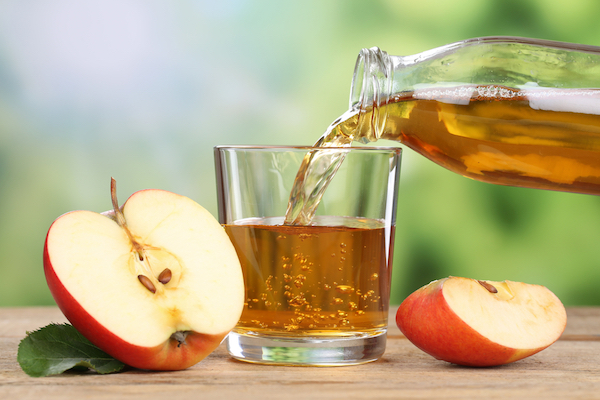

Have you ever felt like the end of the world is near, when you got out of bed and saw your cheeks in the mirror, all red and dried, like there’s been a battle on your face over night? Well… yours truly’s been there and I can tell you it sure ain’t no pretty site!
Imagine going to sleep like any other night, with no visible deteriorating signs on your body, having a good and peacefull rest and then, without any warning, be in for a big surprise in the morning. You turn on the bathroom lights, get closer to the mirror, and witness your eyes going from half closed to fully open in just under a second, at the sight of this horrific rash on the sides of your nose and cheeks.
What is this?! All sort of thoughts are now running wild through your sleepy head, panic encompasses your body and you feel like your knees are about to fail your legs. What kind of sorcery has happened over night?
Hold your horses now. One of the main causes for this phenom, especially in the cold season, is seborrheic dermatitis, an oily facial and scalp condition that causes scaling or flaking. The good thing is it can be treated right there on the spot with 2 cooking ingredients. The bad thing is it may reappear due to stress or cold weather factors.
Cooking ingredients? Yup, you heard me. Sure, the doctors recommend using a cream, but from what I’ve learned you can succesfully replace it with a do-it-at-home solution.
So, you’ve seen the problem. Now let’s take a look at the solution. The 2 key ingredients can be, as mentioned before, found in your kitchen: apple vinegar and olive oil!
Before going to bed at night mix 10ml of apple vinegar with 10ml of water and using some wadding, dip in the mixture, and then gently rub on your problem areas. After a few minutes, you can you some olive oil to gentley hidrate the area, again using wadding. Do this a few nights in a row, until you feel the little rash vanishes.
This is what I’ve used every time I’ve had this problem and I can tell you it is the best alternative to pharmaceutical creams.